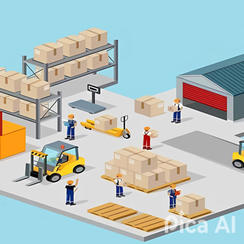
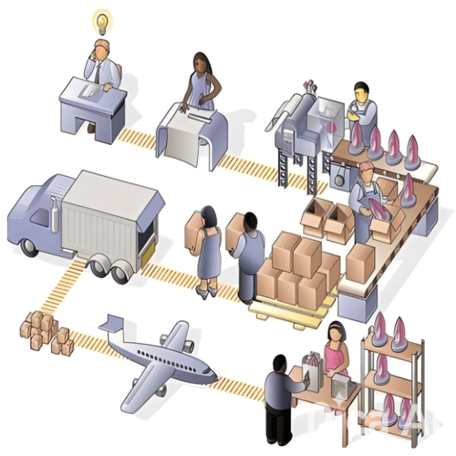

PAISES DESTINO
- Mexico lidera con el 24,47% del valor total de exportaciones, lo que inidca que es el pricipal socio commercial en este grupo
- Chile (17,12%) y Peru (14,61%) tambien son mercados fuertes, representando en conjunto mas de un 30% del total.
- Ecuador(9,89%), Republica Dominicana(8,65%), y Costa Rica (7,45%) siguen como destinos importantes pero con menor peso.
- El salvador, Bolivia y Guatemala tienen una participacion mas baja (entre 5% y 7%).
La información observada en la gráfica observa una alta concentración de exportaciones en tres países principales: México, Chile y Perú, los cuales en conjunto representan el 56,2% del valor total exportado por la competencia.
Esta fuerte participación indica que el mercado objetivo de la competencia está centralizado en estas tres economías. Esta concentración puede reflejar una demanda estable, también representa un riesgo estratégico por lo cambios en las políticas. Por otro lado, países como Bolivia y Guatemala, que actualmente presentan una menor participación en el total exportado, deben ser observados como mercados en desarrollo con potencial de crecimiento en el cual se pueda posicionar como una marca líder ya que hay una baja competencia.
COMPORTAMIENTO DE LAS EXPORTACIONES DEL PRODUCTO POR MES Y LA VARIACIÓN PRESENTADA
Compara cada variación del mes entre los dos períodos 2023 y 2024:
| Mes | Variación |
|---|---|
| Ago (202408) | +11.85 |
| Sep (202409) | +21.07 |
| Oct (202410) | -14.73 |
| Nov (202411) | +3.48 |
| Dic (202412) | +20.31 |
| Ene (202501) | +15.87 |
A diferencia de octubre, todos los meses muestran crecimiento en exportaciones. Esto tuvo influencia por la variación de los kilos exportados en 2023–2024 fueron 1,804,717.96 y 2024–2025 1,485,937 dando una diferencia de -318,780 donde se ve reflejado en el punto bajo presentado.
Los meses con mayor participación fueron:
Mes Participación 2024–2025
- Dic: 17.84%
- Nov: 16.16%
Diciembre y enero tienen los valores más altos de exportación. Esto coincide con campañas de fin de año, navidad. Donde aumenta la demanda en sectores como cosmética, alimentos, regalos, etc. Lo que da un claro comportamiento estacional. Las campañas de fin de año influyen fuertemente en la demanda.
EXPORTACIONES POR DEPARTAMENTO DE ORIGEN Y DE PROCEDENCIA DEL ÚLTIMO AÑO
 EN EL MERCADO DE LOS COSMÉTICOS EN COLOMBIA NORTE DE SANTANDER NO ES UN DEPARTAMENTO EL CUAL TENGA PARTICIPACIÓN EN LA EXPORTACIÓN DE COSMÉTICOS ESPECÍFICAMENTE POLVOS COMPACTOS TAMBIÉN ES BASTANTE SORPRENDENTE QUE ANTIOQUIA TAMPOCO TENGA UNA PARTICIPACIÓN SIGNIFICATIVA EN ESTE CASO SE TOMÓ LA EMPRESA VOGUE PARA PODER HACER UN PUNTO DE COMPARACIÓN MAS CONCRETO ESTA EMPRESA TIENE SU PRODUCCIÓN EN EL DEPARTAMENTO DE CUNDINAMARCA DEPARTAMENTO DE ORIGEN.
Empresas Exportadoras
Hay dos principales exportadoras: LABORATORIOS DE COSMÉTICOS VOGUE S A S (con exportaciones a México, Chile, Panamá y Emiratos Árabes), BEL-STAR S.A. (con múltiples exportaciones a Chile). Ambas están ubicadas en Cundinamarca donde tiene la razón de ser Cundinamarca como empresa exportadora de cosméticos, con diversificación en diversos destinos.
LABORATORIOS DE COSMÉTICOS VOGUE S A S, según el departamento de origen es el mayor exportador, el principal destino de exportación es MÉXICO (38,451.13 kg) pero también tiene mercados como Panamá (495.24) y emiratos árabes (309.83)
BEL-STAR S.A. tiene su principal foco de exportación en el país de Chile donde realiza pequeñas exportaciones de diferentes productos cosméticos.
El valor FOB de los países a los que se exporta:
| País | Valor FOB (USD) |
|---|---|
| México | 63,926.53 |
| Chile | 1,534.35 |
| Panamá | 9,471.27 |
| EAU | 38,969.11 |
Emiratos árabes tiene un valor FOB bastante alto donde nos puede indicar la exportación de productos premium de cosmética o especializados con un alto valor.
CUNDINAMARCA como departamento de origen lidera de una manera clara la exportación de productos cosméticos tanto por cantidad y valor FOB en empresas como Vogue y Bel-Star, tienen una gran presencia en países latinoamericanos y también están empezando a posicionarse en mercados poco comunes como lo de los Emiratos Árabes siendo este muy exclusivo.
DEPARTAMENTO DE PROCEDENCIA
Cundinamarca es el principal centro de exportación de cosméticos en polvo de Colombia durante el 2024 donde incluye empresas como Laboratorios de Cosméticos Vogue, BEL-STAR S.A., PROMOTORA DE BELLEZA, DIBELL INVERSIONES el departamento de Antioquía tiene poca participación donde exporta a Guatemala con un valor bajo respecto a la competencia por un valor FOB de 1,534.67 USD. Cundinamarca tiene altos valores de fob a destinos importantes como México, Chile, Panamá, emiratos árabes, Bolivia y costa rica donde tienen un gran posicionamiento por su diversificación de mercados.
| Destino | Valor FOB (USD) | FOB Unitario COP/kg |
|---|---|---|
| México | $63,926.53 | 63,542.81 |
| Emiratos Árabes | $38,969.11 | 484,081.06 |
| Chile (varios) | $1,200 – $1,500 | 100K – 190K |
| Guatemala | $1,534.67 | 55,498.01 |
El análisis del valor FOB muestra que Cundinamarca no solo lidera en volumen, sino también en diversidad de precios, adaptándose a distintos mercados donde se evidencia una segmentación.
Productos de bajo costo → mayor volumen, países vecinos.
Productos de alto valor → menor volumen, mercados premium.
PRINCIPALES EXPORTADORES
.png)
1. BEL STAR SA, CON EL 38,90% DE EXPORTACIONES EN EL MERCADO DE COSMÉTICOS
2. JOHNSON & JOHNSON DE COLOMBIA SA, CON EL 16,25% DE LAS EXPORTACIONES
3. LABORATORIOS DE COSMÉTICOS VOGUE SAS, CON EL 8,39% DE LAS EXPORTACIONES DE COSMÉTICOS